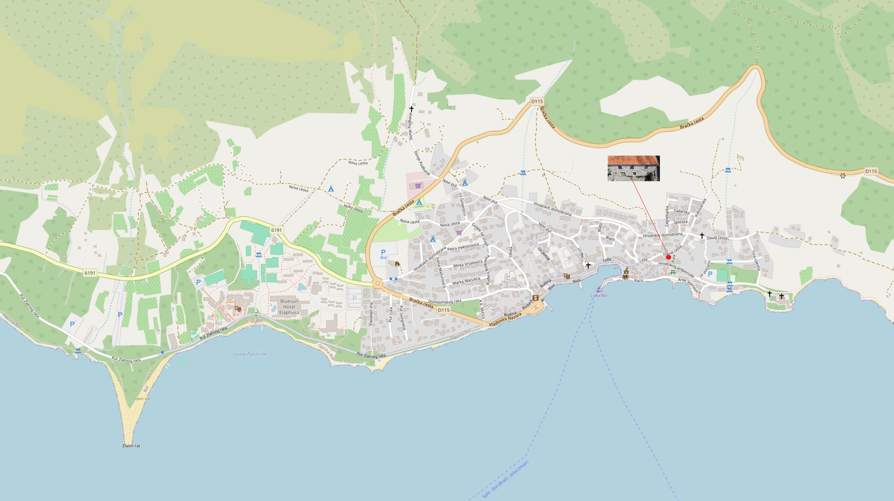
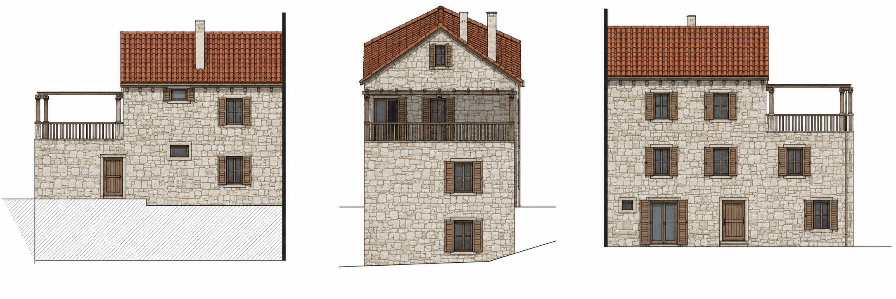

{{ block.title }}
{{ block.body }}
{{ t.photosSub }}
{{ t.swipeHint }}
{{ t.locationBody1 }}
{{ t.locationBody2 }}

{{ t.surrIntro }}
{{ block.body }}
{{ t.oppIntro }}
{{ t.o1Body }}
{{ t.o2Body }}

{{ t.contactBody }}
{{ contactPlaceholderNote }}